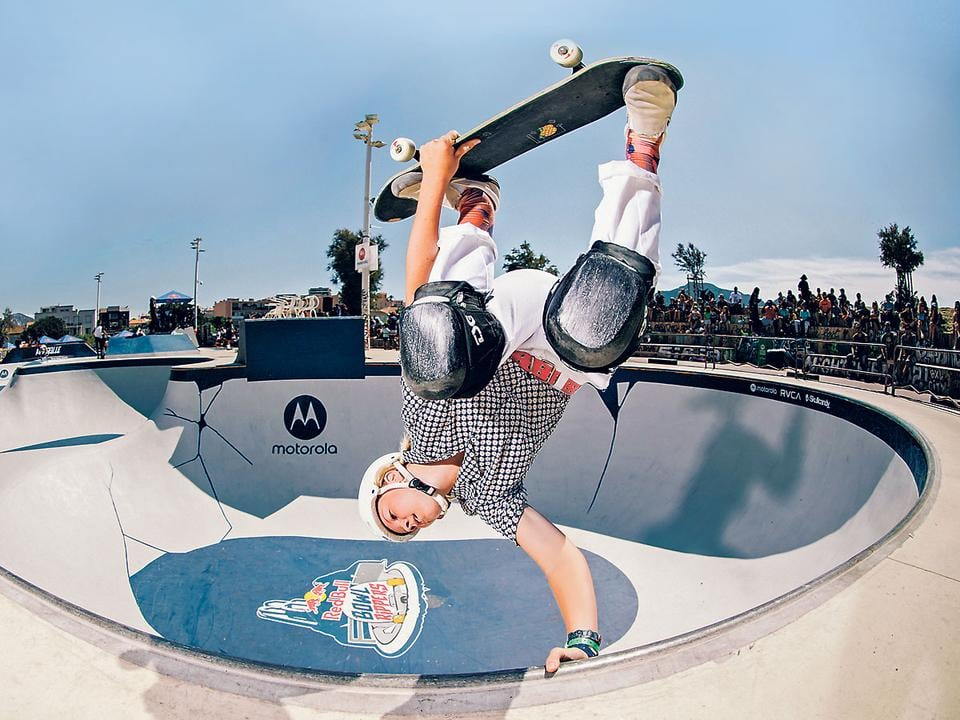

A gördeszkázás az Egyesült Államokból származó akciósport, amely magában foglalja a lovaglást és gördeszkával való trükköket, valamint szabadidős tevékenységet, művészeti ágat, szórakoztatóipari munkát és közlekedési módot. A gördeszkázást sok gördeszkás alakította és befolyásolta az évek során. Egy 2009-es jelentés megállapította, hogy a gördeszkapiac éves bevétele 4,8 milliárd dollárra rúg, és a világon 11,08 millió aktív gördeszkás él. 2016-ban bejelentették, hogy a gördeszka képviselteti magát a 2020-as tokiói nyári olimpián, férfi és női csapatokban egyaránt.
